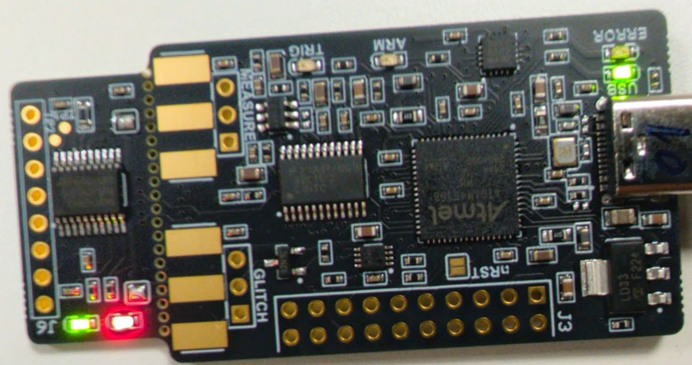
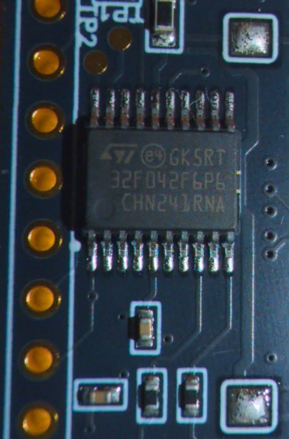

Leer una clave AES en el consumo
Un chip gasta un poco más o un poco menos de corriente según los datos que maneja. Midiendo ese gasto mientras cifra, se le puede sacar la clave. Aquí lo contamos desde cero, con figuras que se pueden tocar y con medidas hechas en nuestra placa.
En pocas palabras
- La clave se deduce del consumo del microcontrolador mientras cifra, sin tocar su memoria y sin romper AES.
- El truco es atacar la clave byte a byte: 16 bytes × 256 posibilidades en lugar de 2128 claves. Para cada posibilidad se predice el consumo y se mira cuál encaja con lo medido.
- En nuestra placa, un ChipWhisperer-Nano, el ataque recupera los 16 bytes de la clave. Reordenando al azar las trazas medidas, con 112 trazas lo consigue 9 de cada 10 veces.
- En esa misma placa, barajar el orden de SubBytes solo multiplicó por 3,6 las trazas necesarias. Los retardos aleatorios tumbaron el ataque directo, pero no lo hacen imposible: cambiando el preprocesado salieron 7 de los 16 bytes.
Cómo leer la página: las figuras con Datos simulados usan trazas generadas por ordenador, para ver el mecanismo con todos los mandos a mano; las que llevan Medida real salen de nuestra placa. Las cajas verdes proponen qué probar, y sus botones lo hacen por ti. Las palabras con subrayado de puntos, como traza, enseñan su definición al pasar por encima o al tocarlas.
1. El ataque en cuatro pasos
El objetivo es recuperar la clave de un AES-128 que se ejecuta en un microcontrolador sin tocar su memoria ni su software: solo midiendo cuánta corriente consume mientras cifra. El ataque se llama análisis de consumo por correlación (CPA, de correlation power analysis) y es uno de los ataques de canal lateral que recoge el artículo base del trabajo [1]. Visto desde lejos, tiene cuatro pasos:
- Medir. Se le pide al chip que cifre muchos bloques y, en cada cifrado, se graba su consumo. Cada grabación es una traza.
- Suponer. Se coge un byte de la clave y se prueban sus 256 valores posibles, uno a uno. Cada valor es un candidato.
- Predecir. Con cada candidato se calcula cuánto debería haber consumido el chip en cada cifrado, si ese fuera el byte de verdad.
- Comparar. El candidato cuya predicción se parece a lo medido es el byte de la clave. Se repite con los otros 15 bytes.
Conviene dejar claras dos cosas desde el principio. La primera: AES no se rompe. El algoritmo sigue siendo seguro; lo que se explota es una implementación concreta, un AES en software y sin protecciones, que deja escapar información física mientras trabaja. La segunda: la placa es de laboratorio y la clave la elegimos nosotros. No protege nada real.
La página sigue el orden en que se entiende el ataque. Primero, de dónde sale la fuga y qué parte de AES se ataca. Después, la placa y las tres técnicas de análisis de consumo: el simple (SPA), el diferencial (DPA) y el de correlación (CPA). Y al final, el ataque sobre la placa real y lo que pasa cuando el cifrado se protege.
2. Por qué el consumo delata los datos
Un microcontrolador está hecho de lógica CMOS. Una puerta CMOS apenas consume mientras su salida está quieta; la mayor parte de la energía se gasta cuando un bit cambia de valor y hay que cargar o descargar la capacidad que cuelga de él. Por eso el consumo instantáneo depende de los datos que se están moviendo, no solo de la instrucción que se ejecuta [2], [3].
Para atacar no hace falta un modelo eléctrico exacto; basta uno que acierte en la tendencia. El más usado es el peso de Hamming (HW): el número de bits a 1 del valor que se procesa. Si el registro o el bus parten de cero, los bits que cambian al cargar un valor son justo los que valen 1, así que un byte con muchos unos cuesta, en media, algo más que uno con pocos [2]. Es una aproximación: si parten de otro valor, lo que cuenta es cuántos bits cambian entre el anterior y el nuevo (la distancia de Hamming), y cada circuito es distinto. Como no sabemos qué había antes en el registro, usamos el peso.
Lo que mide el atacante es una traza: el consumo del microcontrolador durante un cifrado, muestreado a intervalos regulares. Es una lista de números, uno por instante t, y cada cifrado da una traza nueva.
La figura lo enseña con un solo byte, y adelanta dos piezas de la sección siguiente: el chip combina un byte del dato (p) con uno de la clave (k) y busca el resultado en una tabla, la S-box. Arriba se ve ese cálculo y el peso de Hamming del resultado. Como cada cifrado lleva un dato distinto, el resultado tiene cada vez otro peso, de 0 a 8. Abajo, las trazas simuladas se reparten en esos nueve grupos y se promedian dentro de cada uno; los mandos p y k solo eligen qué grupo se resalta en naranja. La franja amarilla marca el instante en que el chip maneja el byte.
Pregunta rápida. Con el ruido de esta figura, ¿se puede saber con una sola traza cuántos bits a 1 tenía el byte?
Una sola traza no basta para leer el peso de Hamming, porque el ruido es mayor que el escalón de un bit. Pero el ruido no depende de los datos, y al promediar muchas trazas se cancela mientras que la fuga se queda. Todo lo que sigue es una forma cuidadosa de aprovechar eso.
Idea clave. El consumo lleva una huella pequeña del dato que se procesa. No se ve en una medida, pero sí en la estadística de muchas.
3. Lo justo de AES
AES-128 cifra bloques de 16 bytes con una clave de 16 bytes [4]. El bloque que se cifra es el texto claro; en el ataque lo manda el PC, así que el atacante lo conoce. AES copia el texto claro en un estado de 16 bytes, le aplica un AddRoundKey con la clave y lo transforma en diez rondas. Cada ronda repite la misma secuencia de pasos, que en el estándar se llaman SubBytes, ShiftRows, MixColumns y AddRoundKey (la última se salta MixColumns). Al final, el estado es el texto cifrado, o criptograma.
Para el ataque solo importan los dos primeros pasos, el AddRoundKey inicial y el SubBytes de la primera ronda, y los dos trabajan byte a byte:
- AddRoundKey mezcla el estado con la clave mediante un XOR (⊕) bit a
bit: el bit resultante es 1 si los dos bits son distintos y 0 si son iguales. En el inicial se usa la clave tal
cual: si pj es el byte j del texto claro y kj el de la
clave, el byte j del estado pasa a ser pj ⊕ kj.
Por ejemplo,
0x32 ⊕ 0x2b = 00110010 ⊕ 00101011 = 00011001 = 0x19. - SubBytes sustituye cada byte por otro consultando la S-box
(substitution box), una tabla fija y pública de 256 entradas: la primera cifra hexadecimal del byte da la
fila y la segunda, la columna. Para
0x19, la fila 1 y la columna 9 dan0xd4. La tabla no tiene nada secreto; es el paso no lineal del cifrado [4], porque los otros tres solo recolocan bytes o los combinan con XOR y operaciones lineales.
0x32 y 0x2b son el primer byte del texto claro y de la clave del ejemplo del
apéndice B del FIPS-197, el mismo que usa la figura de la sección anterior. El valor que se ataca es la salida de la
S-box del byte j:
vj = SBox(pj ⊕ kj)
Hay dos razones para elegir este punto. La primera: depende de un solo byte de clave y de un byte conocido, así que se puede calcular para cada candidato.
La segunda explica por qué se ataca la salida de la S-box y no la del XOR, que también depende solo de
pj y kj. Si para un candidato k se predijera
HW(pj ⊕ k), el candidato complementario, k ⊕ 0xff (todos los
bits al revés), predeciría 8 − HW(pj ⊕ k): exactamente lo contrario. Y como no se
sabe de antemano si en la medida «más unos» da una lectura más alta o más baja (depende de cómo esté conectado el
medidor), una predicción y su contraria encajan igual de bien: no habría forma de distinguirlos. Los candidatos que
difieren del correcto en un solo bit también predicen casi lo mismo. La S-box rompe esa estructura: dos entradas parecidas dan salidas que no se
parecen nada, y solo el candidato correcto predice bien la fuga.
Las barras no son un ataque con ruido, sino un cálculo exacto: cuánto se parece, sobre los 256 valores posibles del byte de texto claro, la predicción de cada candidato a la del correcto. Dicen de antemano qué candidatos falsos van a hacerle sombra al correcto en un ataque de verdad.
Pregunta rápida. ¿Por qué no se ataca p ⊕ k, que es más sencillo de calcular?
Idea clave. Se ataca vj = SBox(pj ⊕ kj): depende de un solo byte de la clave, el atacante puede calcularlo para cada candidato y la S-box hace que solo el correcto acierte.
4. Divide y vencerás
Probar todas las claves posibles es imposible. Pero cada byte de la clave entra en su propio vj, así que se puede comprobar por separado. En lugar de acertar los 16 bytes a la vez, se acierta uno, luego otro, y así hasta dieciséis.
Un portátil comprueba esas 4096 hipótesis en milisegundos; las figuras de esta página lo hacen cada vez que mueves un mando.
Idea clave. El canal lateral convierte un problema imposible en dieciséis problemas pequeños, porque deja comprobar cada byte de la clave por separado.
5. La placa
Medimos con un ChipWhisperer-Nano de NewAE [5], la placa con la que NewAE plantea sus laboratorios de análisis de consumo [6]. Lleva en la misma placa el microcontrolador atacado y el capturador, y se conecta al PC por USB. El consumo se mide con una resistencia en serie con la alimentación del chip: cuanta más corriente pasa, más tensión cae en ella, y esa tensión es lo que el capturador convierte en números.


32F042F6P6.El chip víctima es un STM32F042F6P6, un Cortex-M0 de 32 bits. La documentación de NewAE habla de un STM32F030 [5], pero el de nuestra placa es otro de la misma familia: lo dice su serigrafía y lo confirma el propio chip, que responde al programador con el identificador de un STM32F04x y 32 KB de flash. Para el ataque no cambia nada.
Cada medida sigue siempre el mismo camino. Pasa el ratón por los pasos, o pulsa el botón, para verlos en el esquema:
- El PC manda al Nano, por USB, un texto claro aleatorio de 16 bytes, y el capturador se lo pasa al chip por el puerto serie.
- El microcontrolador sube un pin de aviso, el trigger, cifra con la clave de laboratorio y lo baja.
- La subida del trigger arranca el convertidor del Nano (ADC), que mide el consumo del chip durante un número fijo de muestras.
- El PC recibe el criptograma y la traza, comprueba el criptograma con su propio AES y guarda las tres cosas: texto claro, criptograma y traza.
Esto se repite miles de veces. La placa da 18,6 trazas por segundo, así que una campaña de 3000 trazas tarda menos de tres minutos.
Con la configuración por defecto, el microcontrolador y el convertidor van a 7,5 MHz con relojes que salen del mismo generador: una muestra por ciclo y con un desfase fijo mientras la placa no se reinicia. (Ese desfase cambia en cada arranque, y con algunos valores las trazas se recortan [5]; a nosotros no nos ha pasado.) Es un caso muy favorable para el atacante, porque la placa está pensada para estos laboratorios, y por eso lo que medimos no se puede trasladar sin más a otro dispositivo.
El ataque compara el mismo instante en todas las trazas, así que necesita que estén alineadas y que el ruido no tape la fuga. Lo hemos comprobado midiendo:
- Alineación. Con 500 cifrados del mismo texto claro, ninguna traza se desvía de la media ni una sola muestra, sin procesarlas.
- Ruido. La variación de una traza a otra con el mismo texto es de un escalón del convertidor de 8 bits, más o menos.
- Ventana. La primera ronda entra de sobra en las 5000 muestras por defecto (lo verás en la sección siguiente).
Idea clave. De cada cifrado se guardan tres cosas: el texto claro, el criptograma y la traza. El ataque solo necesita la primera y la tercera.
6. SPA: mirar una traza
El análisis simple de consumo (SPA) consiste en mirar una traza y reconocer en ella la estructura del algoritmo. En el artículo que presentó el DPA ya se ven a simple vista las 16 rondas de un DES (el estándar de cifrado anterior a AES) en una sola traza [7]. Con este AES no basta para sacar la clave, porque ejecuta las mismas instrucciones sea cual sea la clave, pero sirve para saber dónde está la primera ronda y no buscar a ciegas en toda la traza.
La figura es la media de 100 trazas del cifrado completo, medidas en nuestra placa con una captura más larga de lo habitual (11 000 muestras). Para no fiarnos solo del aspecto, debajo va, de 0 a 1, cuánto se nota en cada muestra un valor de la primera ronda (azul) y uno de la última (verde). Es la correlación que se explica en la sección 8, calculada con la clave, que aquí conocemos. Con solo 100 trazas, el fondo de entre 0,2 y 0,4 es puro azar: lo que cuenta son los picos, que marcan dónde empieza y dónde acaba AES.
El dibujo se repite cada 1014 muestras: son las rondas. Como el Nano toma una muestra por ciclo de reloj, el cifrado completo dura unos 10 000 ciclos (1,3 ms a 7,5 MHz). La primera ronda empieza hacia la muestra 463 y calcula sus S-box nada más empezar: su fuga más fuerte está entre la 463 y la 730. Lo que sigue al cifrado es el firmware, que prepara y envía el criptograma. Para el ataque basta con quedarse con el principio de la traza: en las figuras de esta página usamos las muestras 440 a 740, y las cifras de la sección 10 salen de las 1500 primeras.
Idea clave. El SPA no da la clave de este AES, pero dice dónde mirar.
7. DPA: restar medias
El análisis diferencial de consumo (DPA) de Kocher, Jaffe y Jun [7] fue el primer ataque estadístico sobre el consumo. Para un byte de la clave, funciona así:
- Se elige un candidato k y un bit de vj.
- Con ese candidato se calcula, para cada traza, cuánto valdría ese bit. Las trazas en las que saldría 1 van a un grupo y las demás, a otro.
- Se promedia cada grupo y se restan las dos medias.
- Se repite con los 256 candidatos y se elige el que da el pico más alto.
Si el candidato es falso, el reparto no tiene nada que ver con lo que hizo el chip: los dos grupos son iguales salvo por el azar, y la diferencia tiende a cero. Si es el correcto, en el instante en que se procesa vj un grupo consume sistemáticamente algo más que el otro, y aparece un pico.
En la figura, arriba van las medias de los dos grupos, que casi se pisan; debajo, su diferencia: en azul la del candidato elegido y en gris las de los otros 255.
El DPA de un bit desaprovecha los otros siete, que para él son ruido. Con las 2000 trazas de la figura, que tienen mucho más ruido que fuga (SNR = 0,1; la relación señal-ruido se define en la sección 9), acierta entre 7 y 14 de los 16 bytes según el bit que se elija, y el CPA acierta los 16. Además, para saber cuál es el mejor bit hay que conocer la clave: un atacante real no sabría cuál escoger.
En la memoria, con otras trazas del mismo modelo, el DPA acierta entre 7 y 15 bytes (sección 4.1; Datos simulados).
Idea clave. El DPA parte las trazas en dos grupos según un bit que predice el candidato. Si el candidato es el correcto, los grupos consumen distinto. Funciona, pero tira siete de cada ocho bits.
8. CPA: correlacionar
El análisis de consumo por correlación (CPA) de Brier, Clavier y Olivier [8] usa la predicción entera en lugar de un bit. No pregunta «¿este bit vale 1?», sino «¿cuántos bits valen 1?». Y en vez de restar dos medias, resume en un solo número cuánto se parece la predicción a lo medido: la correlación de Pearson, ρ. Vale 1 si una serie sube siempre en proporción a la otra, −1 si baja en proporción a ella y 0 si no tienen relación lineal. Entre medias, cuanto más lejos de 0, más clara es la relación.
Empecemos por una sola casilla: un candidato y un instante. Cada traza medida es un punto. En horizontal, lo que el candidato predice para ese cifrado; en vertical, lo que la placa midió en ese instante.
El CPA repite esa cuenta para cada byte j, cada candidato k y cada instante t, sobre las N trazas:
Aquí pi,j es el byte j del texto claro de la traza i. Para cada candidato se toma el pico a lo largo de la traza, el mayor |ρ(k, t)|. Se usa el valor absoluto porque el signo de la fuga depende de cómo se mida (por ejemplo, de en qué lado de la alimentación esté la resistencia de medida). Gana el candidato de mayor pico.
Con el correcto, la predicción coincide con la fuga real y la correlación sube justo en el instante de su S-box. Con los otros 255, la predicción es casi independiente de la traza y la correlación se queda en el ruido.
La figura siguiente hace el ataque entero. Usa trazas simuladas para poder cambiar el ruido a mano. Arriba, la clave que va saliendo. Debajo, para el byte elegido, |ρ(k, t)| de los 256 candidatos a lo largo del tiempo y el pico de cada uno.
El cálculo no necesita guardar las trazas: basta acumular, para cada byte y cada valor del texto
claro, cuántas trazas hay y su suma. Por eso la figura responde al momento con miles de trazas. El código está en
web/js/model/cpa.js y se comprueba contra la correlación directa.
Idea clave. El CPA puntúa cada candidato con la correlación entre lo que predice y lo que se midió. El correcto destaca justo cuando el chip maneja ese byte, y los otros 255 se quedan en el ruido.
9. Ruido y número de trazas
La relación señal-ruido (SNR) es el cociente entre la varianza de la fuga y la del ruido en un instante: cuánto varía el consumo por culpa del dato frente a cuánto varía por todo lo demás. En el modelo simulado, el pico esperado del candidato correcto es
ρcorrecto = √( SNR / (1 + SNR) )
¿Cuántas trazas hacen falta, entonces? El razonamiento tiene tres pasos:
- Ese pico no crece con N. Más trazas no hacen que el correcto correlacione más; solo hacen que su estimación sea más precisa.
- Lo que baja con N es la correlación de los candidatos falsos. La de cada uno es puro azar, del orden de 1/√N; pero se miran 255 candidatos en las 96 muestras de la traza simulada, y el mayor de todos esos valores queda unas cuantas veces por encima de 1/√N.
- La clave aparece cuando ese máximo cae por debajo del correcto. Como ρcorrecto ≈ √SNR cuando la SNR es pequeña, hace falta N del orden de 1/SNR: si la SNR se divide entre diez, hacen falta del orden de diez veces más trazas (en la tabla de más abajo, unas 7,5).
Pregunta rápida. Cuando ya hay bastantes trazas, ¿qué le pasa al pico del candidato correcto si se añaden más?
La tabla resume el mismo experimento repetido muchas veces y con varios niveles de ruido. Es la referencia con la que compararemos la placa en la sección siguiente.
| SNR | N para el 90 % | N mediana | |ρ| en la simulación | |ρ| de la fórmula |
|---|---|---|---|---|
| 2 | 55 | 39 | 0,816 | 0,816 |
| 1 | 77 | 55 | 0,707 | 0,707 |
| 0,5 | 151 | 108 | 0,577 | 0,577 |
| 0,2 | 295 | 211 | 0,409 | 0,408 |
| 0,1 | 578 | 413 | 0,301 | 0,302 |
| 0,05 | 1133 | 809 | 0,218 | 0,218 |
| 0,02 | 2220 | 2220 | 0,140 | 0,140 |
| 0,01 | > 3000 | > 3000 | 0,100 | 0,100 |
| 0,005 | > 3000 | > 3000 | 0,073 | 0,071 |
Un detalle del modelo: cada traza simulada tiene además un desplazamiento vertical propio, como la deriva del cero de un amplificador. Para el CPA eso también es ruido, porque la correlación se calcula entre trazas en cada instante. Un desplazamiento o una ganancia comunes a todas las trazas, en cambio, no cambian la correlación.
Idea clave. El ruido no impide el ataque: lo encarece. Si la SNR baja a la décima parte, hacen falta del orden de diez veces más trazas.
10. El ataque en nuestra placa
Esta es la misma figura de la sección 8, pero con 400 trazas medidas en nuestra placa en lugar de simuladas: las muestras 440 a 740 de cada traza, la ventana que localizamos con el SPA. El cálculo es exactamente el mismo; solo cambian los datos.
Con las 1000 trazas que guardamos en el repositorio, el CPA recupera los 16 bytes. El pico del candidato correcto queda entre 0,586 y 0,645, y el mejor de los 255 falsos, entre 0,154 y 0,210: la separación es enorme.
¿Cuántas trazas hacen falta? Depende de cuáles entren primero, así que no basta con probar una vez. Repetimos el ataque sobre 100 ordenaciones aleatorias de esas 1000 trazas y contamos en cuántas está ya la clave completa con cada N:
Los puntos de control van en progresión geométrica, así que cada cifra es una cota: 112 significa «entre 96 y 112». Las ordenaciones comparten trazas, de modo que no son ensayos independientes como los de la simulación, pero dan una idea de cuánto cambia el resultado según qué trazas entren primero.
¿Cuadra con la simulación? Picos de entre 0,59 y 0,65 corresponden a una SNR entre 0,5 y 0,7, y la tabla de la sección anterior predice para ese ruido entre 77 y 151 trazas para el 90 %. Nuestras 112 trazas caen dentro de ese intervalo.
Donde sí se nota que la placa no es el simulador es en la forma de la fuga. En el simulador cada byte fuga solo durante su SubBytes; en la placa, ShiftRows y MixColumns vuelven a cargar los mismos bytes. En la figura se ve el principio: el segundo pico del byte 0, hacia la muestra 730. En la traza completa, la correlación del correcto sigue por encima de 0,3 hasta la muestra 1127. Ese detalle será importante en la sección siguiente.
Idea clave. En la placa, el ataque de la simulación funciona sin cambiar una línea: bastan entre 100 y 130 trazas, menos de diez segundos de captura, para sacar la clave entera.
11. Contramedidas
Las defensas frente al análisis de consumo se agrupan en dos familias [2], y el artículo base repasa las más habituales [1]:
- Enmascaramiento (masking). Cada valor intermedio se combina con un número aleatorio nuevo en cada ejecución, de modo que lo que se procesa ya no depende solo del texto claro y la clave. Contra el CPA de esta página, que predice HW(vj) directamente, la predicción deja de valer. Los ataques de orden superior, que combinan varios instantes de la misma traza (por ejemplo, el de la máscara y el del valor enmascarado), pueden seguir funcionando con más trazas. Y en software hay que tener cuidado: si un registro que guardaba la máscara se sobrescribe con el valor enmascarado, o al revés, el consumo de ese cambio depende de los dos a la vez y vuelve a filtrar [9].
- Ocultamiento (hiding). Se deja el valor intacto, pero se hace más difícil verlo: barajar el orden en que se procesan los 16 bytes (shuffling), insertar retardos aleatorios o añadir ruido. Todas reducen la SNR efectiva o reparten la fuga en el tiempo, y lo que consiguen es que hagan falta más trazas.
Las dos que juegan con el tiempo, el barajado y los retardos, se pueden ver en directo. La figura es el mismo CPA con trazas simuladas (SNR = 1, poco ruido), pero el cifrado simulado puede llevar una contramedida:
- SubBytes barajado: en cada traza, los 16 bytes se procesan en un orden aleatorio, así que el byte que atacas cae cada vez en una de 16 posiciones;
- retardos aleatorios: antes de cada byte hay una pausa de 0 a 3 muestras, y las pausas se van sumando, como en nuestro firmware con retardos.
Y en la placa. También lo hemos medido de verdad: compilamos tres versiones de un mismo AES propio, una sin protección, otra con SubBytes barajado y otra con retardos aleatorios, y las atacamos con el mismo CPA. La versión sin protección se parece al AES de la sección 10 pero no es idéntica; con ella, el 90 % se alcanza con 132 trazas en lugar de 112. Su curva acaba en 300 trazas, su último punto de control, con el 98 %: por eso las tres variantes se comparan en el 90 %.
| Variante | Trazas | Bytes | N para el 90 % |
|---|---|---|---|
| Sin contramedida | 1000 | 16/16 | 132 |
| SubBytes barajado | 2000 | 16/16 | 475 |
| Retardos aleatorios | 2000 | 0/16 | no recupera |
La placa no se comporta como el simulador, y la diferencia enseña algo:
- El barajado sirve todavía menos. En la figura, donde el barajado es perfecto, la clave completa pasa de salir con 50 trazas a necesitar entre 4000 y 6000, unas cien veces más. En la placa solo multiplica por 3,6 las trazas necesarias. El motivo es el de la sección anterior: solo se baraja SubBytes, y ShiftRows y MixColumns siguen cargando los mismos bytes en las mismas muestras de siempre.
- Los retardos sirven más. En la figura estorban menos que el barajado: con 1500 trazas ya salen los 16 bytes. En el firmware, en cambio, cada retardo es de 0 a 15 vueltas de un bucle, cada vuelta de varios ciclos, y hay retardos también antes de cada columna de MixColumns y de cada ronda. El cifrado se desplaza mucho más que en el simulador, y el CPA directo no recupera ningún byte ni con 20 000 trazas. Sumando ventanas de 300 muestras antes de correlacionar, como proponen Clavier et al. [10], se recuperan 7 de los 16: el ataque se complica, pero no es imposible.
Queda una confusión frecuente: creer que basta con que el código sea de «tiempo constante», es decir, que tarde siempre lo mismo sea cual sea la clave.
Pregunta rápida. ¿Está protegido frente a este ataque un firmware de tiempo constante?
Ninguna contramedida es una garantía absoluta: todas suben el coste del ataque, y cuánto lo suben depende de la implementación y del atacante. Tampoco basta con que el código sea de tiempo constante; eso protege frente a los ataques de temporización, pero el consumo sigue dependiendo de los datos. De hecho, un código de tiempo constante produce trazas perfectamente alineadas, que es justo lo que el CPA necesita.
Nuestras versiones protegidas usan un generador pseudoaleatorio con semilla fija: sirven para medir el efecto de la aleatorización, pero quien conozca el código puede predecir los retardos, así que no son contramedidas utilizables tal cual. El enmascaramiento no lo hemos medido.
Idea clave. Ocultar la fuga la reparte, pero no la quita. Al barajado le bastaron 3,6 veces más trazas; contra los retardos, cambiando el preprocesado, salieron 7 de los 16 bytes. La clave completa con retardos no la hemos recuperado.
12. Qué nos llevamos
- El ataque es barato. Una placa de laboratorio, un portátil y unos minutos de captura bastan para sacar la clave de este AES sin protecciones. En nuestra placa, con entre 100 y 130 trazas.
- Funciona porque divide. La fuga depende de un byte de clave cada vez, y eso convierte 2128 claves en 4096 hipótesis.
- Pero pide mucho al atacante. Hay que tener el dispositivo en la mano para medir su consumo, hacerle cifrar muchas veces con la misma clave y saber cuándo empieza el cifrado. En nuestra placa todo eso venía hecho: el firmware avisa con el trigger y el capturador comparte reloj con el chip.
- Ocultar no basta. El barajado solo encareció el ataque. Los retardos tumbaron el ataque directo, pero cambiando el preprocesado volvieron a salir 7 de los 16 bytes. La defensa seria es el enmascaramiento, con una fuente aleatoria de verdad, y aun así hay que implementarlo con cuidado.
13. Glosario
- ADC
- Convertidor analógico-digital: el circuito del capturador que transforma el consumo en números. El del Nano es de 8 bits, así que cada lectura va de 0 a 255.
- Canal lateral
- Información que un dispositivo deja escapar por su comportamiento físico (consumo, tiempo, emisiones) y no por sus entradas y salidas.
- Candidato
- Uno de los 256 valores posibles de un byte de la clave. El ataque los prueba todos y se queda con el que mejor explica las medidas.
- Correlación de Pearson (ρ)
- Número entre −1 y 1 que mide si dos series suben y bajan a la vez. Un 0 significa que no tienen relación lineal.
- CPA, DPA y SPA
- Los tres análisis de consumo de la página. El simple (SPA) mira una traza. El diferencial (DPA) parte las trazas en dos grupos y resta sus medias. El de correlación (CPA), que es el ataque de este trabajo, mide cuánto se parece lo medido a lo que predice cada candidato.
- Fuga
- La parte del consumo que depende del dato que el chip está procesando. Es lo que aprovecha el ataque.
- Peso de Hamming (HW)
- Número de bits a 1 de un valor. Un byte tiene entre 0 y 8.
- Ronda
- Cada una de las diez repeticiones de pasos de AES-128.
- S-box
- Tabla fija y pública de 256 entradas con la que AES sustituye cada byte por otro (el paso SubBytes).
- SNR (relación señal-ruido)
- Cociente entre la varianza de la fuga (cuánto varía el consumo por culpa del dato) y la del ruido (cuánto varía por todo lo demás).
- Texto claro
- El bloque de 16 bytes que se manda a cifrar. En el ataque lo elige el PC, así que se conoce. Lo que devuelve el cifrado es el texto cifrado o criptograma.
- Traza
- Lo que se mide durante un cifrado: el consumo del chip muestreado a intervalos regulares. Es una lista de números, uno por instante.
- Trigger (disparo)
- Señal con la que el firmware avisa de que empieza a cifrar, para que el capturador empiece a medir en ese momento.
- XOR (⊕)
- Operación bit a bit: da 1 si los dos bits son distintos y 0 si son iguales.
14. Referencias
- J. Mishra y S. K. Sahay. «Modern Hardware Security: A Review of Attacks and Countermeasures.» arXiv: 2501.04394 [cs.CR], visitado 18 de oct. de 2026. dirección: https://arxiv.org/abs/2501.04394
- S. Mangard, E. Oswald y T. Popp, Power Analysis Attacks: Revealing the Secrets of Smart Cards. New York, NY: Springer, 2007. doi: 10.1007/978-0-387-38162-6
- P. Kocher, J. Jaffe, B. Jun y P. Rohatgi, «Introduction to Differential Power Analysis,» Journal of Cryptographic Engineering, vol. 1, n.o 1, págs. 5-27, 2011. doi: 10.1007/s13389-011-0006-y
- National Institute of Standards and Technology, «Advanced Encryption Standard (AES),» NIST, Gaithersburg, MD, Federal Information Processing Standards Publication FIPS 197-upd1, 9 de mayo de 2023. doi: 10.6028/NIST.FIPS.197-upd1
- NewAE Technology. «CW1101 ChipWhisperer-Nano — ChipWhisperer Documentation,» visitado 10 de nov. de 2026. dirección: https://chipwhisperer.readthedocs.io/en/latest/Capture/ChipWhisperer-Nano.html
- NewAE Technology. «SCA101 Lab 4_2: CPA on Firmware Implementation of AES,» visitado 18 de oct. de 2026. dirección: https://github.com/newaetech/chipwhisperer-tutorials/blob/master/courses_sca101_SOLN_Lab%204_2%20-%20CPA%20on%20Firmware%20Implementation%20of%20AES-CWNANO-CWNANO.rst
- P. Kocher, J. Jaffe y B. Jun, «Differential Power Analysis,» en Advances in Cryptology — CRYPTO ’99, serie Lecture Notes in Computer Science, vol. 1666, Berlin, Heidelberg: Springer, 1999, págs. 388-397. doi: 10.1007/3-540-48405-1_25
- E. Brier, C. Clavier y F. Olivier, «Correlation Power Analysis with a Leakage Model,» en Cryptographic Hardware and Embedded Systems — CHES 2004, serie Lecture Notes in Computer Science, vol. 3156, Berlin, Heidelberg: Springer, 2004, págs. 16-29. doi: 10.1007/978-3-540-28632-5_2
- J. Balasch, B. Gierlichs, V. Grosso, O. Reparaz y F.-X. Standaert, «On the Cost of Lazy Engineering for Masked Software Implementations,» en Smart Card Research and Advanced Applications — CARDIS 2014, M. Joye y A. Moradi, eds., serie Lecture Notes in Computer Science, vol. 8968, Cham: Springer, 2015, págs. 64-81. doi: 10.1007/978-3-319-16763-3_5
- C. Clavier, J.-S. Coron y N. Dabbous, «Differential Power Analysis in the Presence of Hardware Countermeasures,» en Cryptographic Hardware and Embedded Systems — CHES 2000, serie Lecture Notes in Computer Science, vol. 1965, Berlin, Heidelberg: Springer, 2000, págs. 252-263. doi: 10.1007/3-540-44499-8_20
Formato IEEE, el mismo de la memoria; las entradas salen de memoria/referencias.bib.